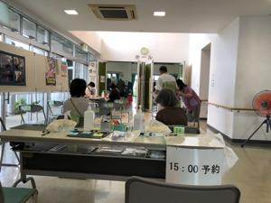

うるがいの話 ある日
最新: ２番目
うるがいとは 前提知識です
カニの画像をクリックすると『うるがいの話』サイトを表示します
うるがい(ｳﾙｶﾞｲ urugai)とは、『もずくがに』の名前でとても大きくなります。
たながー（ﾀﾅｶﾞｰtanagaa）とは手長えびのことで、何種類かあり大きいのは車 エビぐらいになります。
ぶながー(bunagaa)とは、赤い髪の毛、赤い身体、そして身長は１ｍ２０ｃｍ ぐらい、川の蟹を食べているの目撃された。場所は沖縄県国頭郡大宜味村のと ある村僕の隣近所に住んでいる爺さんから、聞いた話です。
2021年07月25日 (日）
２番目
17:33

渡名喜風南選手（柔道女子）の決勝をライブで見る。銀メダルに終わる、悔し
そうだ、みているこちらも辛くなる。日本で初めてのメダルなのに、その後柔
道男子で金をとる、うれし涙。ウーン、オリンピックだな。１番と２番の違い
は・・・。今（１７時）、重量挙げで糸数陽一が銅メダル取れそうだ、とれる
といいな、と少し興奮している。ワクチン接種は指定された時間の３０分前に
会場に入るが、６番目だった。指定された接種開始時間の５分後に医者問診を
受け、８分後に注射を打つ。痛みが殆どない、上手ですねと打った看護師？に
話す。１５分経過、待ち時間含め１時間で会場を後にする。そして今（１７時
２８分）、残念ながら糸数は銅メダルはとれなかった。